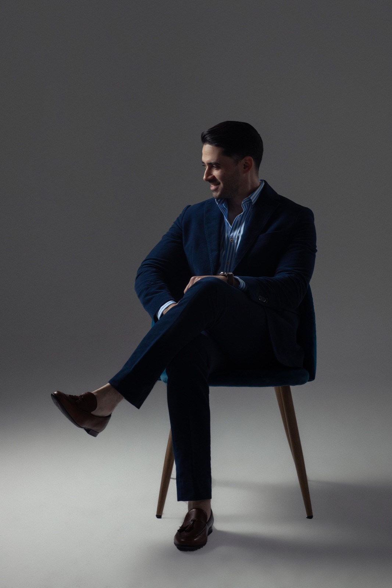

¿Quieres renovar tu estilo con una guía clara y compras bien pensadas?
Este servicio es para ti si buscas proyectar seguridad, optimizar tu clóset y una experiencia de compra personalizada. Durante la sesión presencial te acompaño en tienda para elegir prendas, revisar fits, colores, telas, combinaciones y posibles ajustes. La idea no es comprar más, sino comprar mejor.
- Análisis previo de estilo, tipo de cuerpo y colorimetría.
- Diagnóstico de básicos y piezas clave.
- Sesión presencial de shopping (2 a 4 hrs).
- Lookbook digital con propuestas de 20 outfits.
- Stylebook con guía de estilo, colores y silueta.
- Seguimiento posterior.
Todo se diseña con base en tu estilo de vida, lo que quieres proyectar y las prendas que ya tienes o necesitas renovar.
Escríbeme por WhatsApp